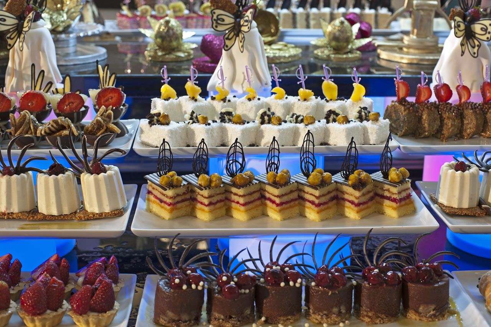
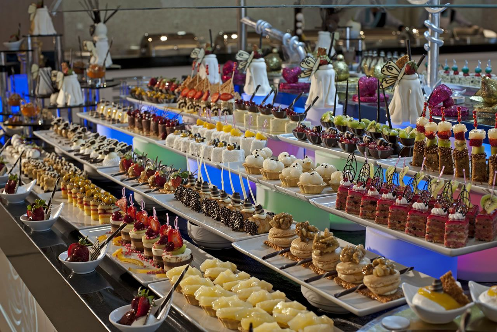
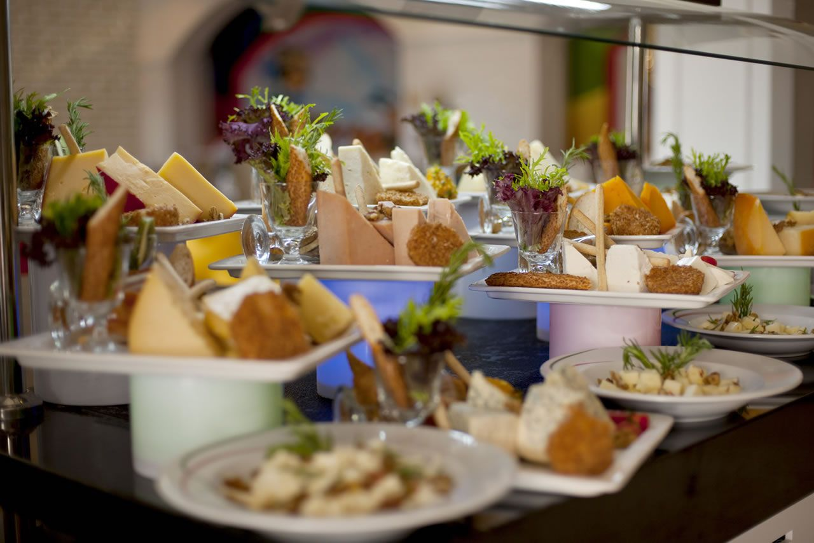
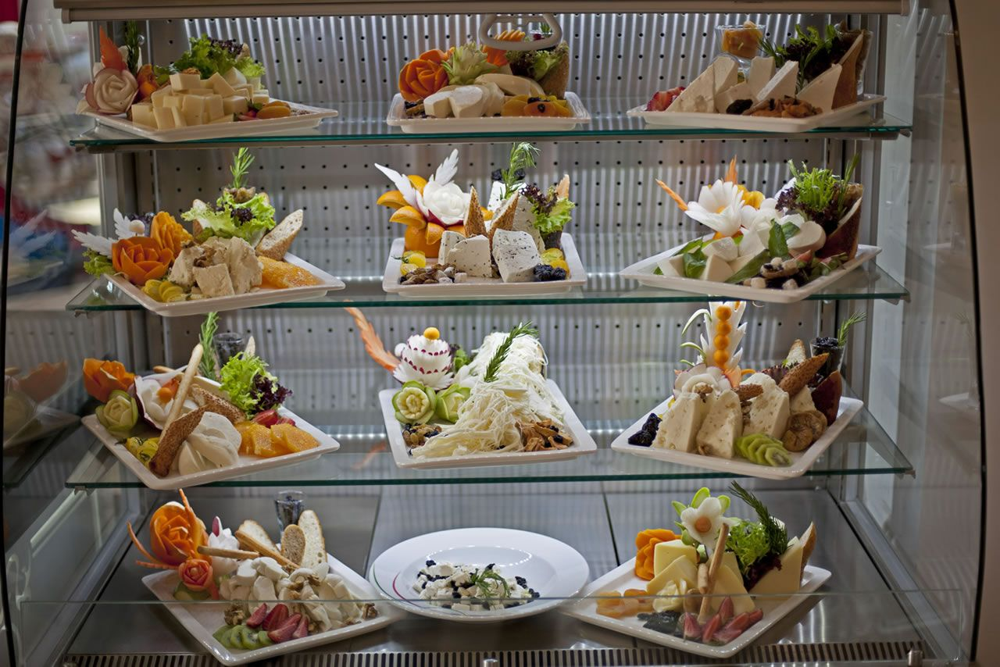
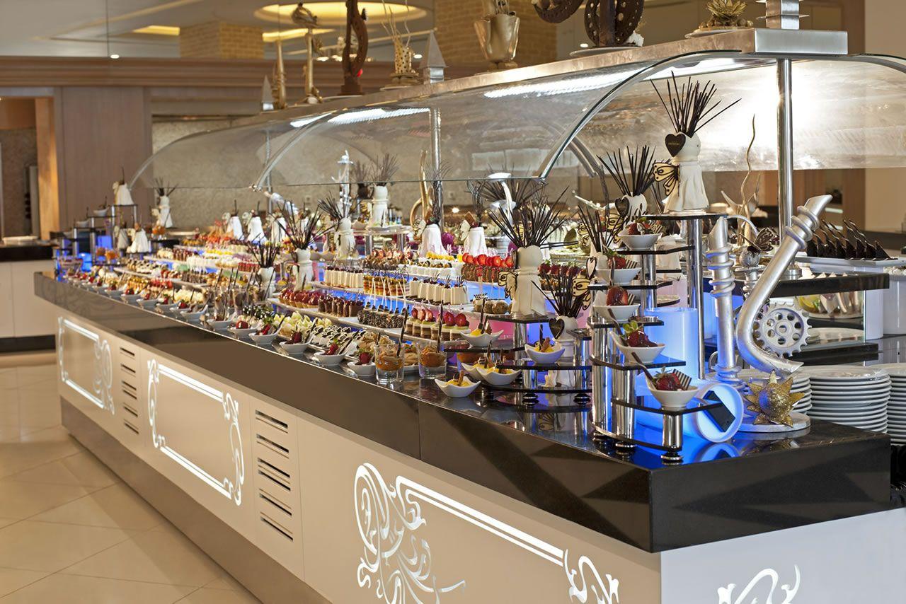
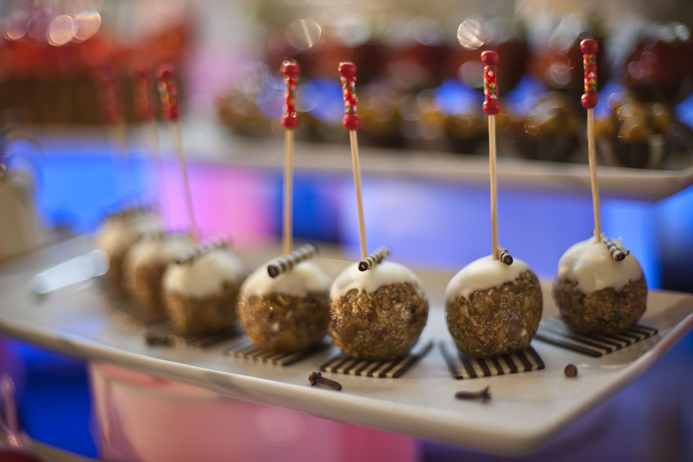

Snack Menu
"Snack menu is full-up at all hours of the day!"
Aperitifs will be waiting for you at all hours of the day at the cuisine of Delphin Imperial. It is possible to taste various appetizers during the day including grills, pizzas, tantuni, Turkish pancakes, ice cream, waffle…





